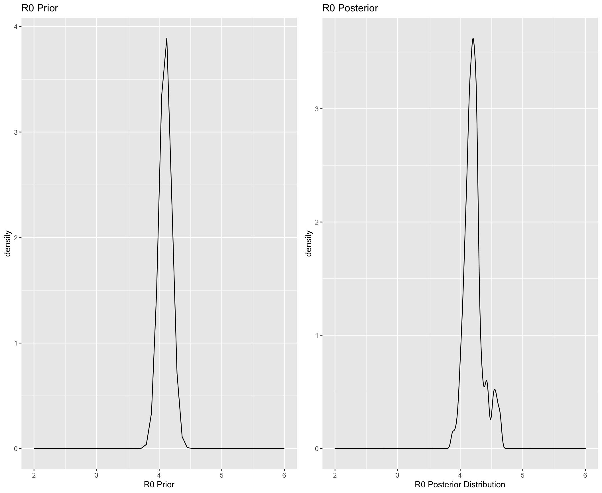
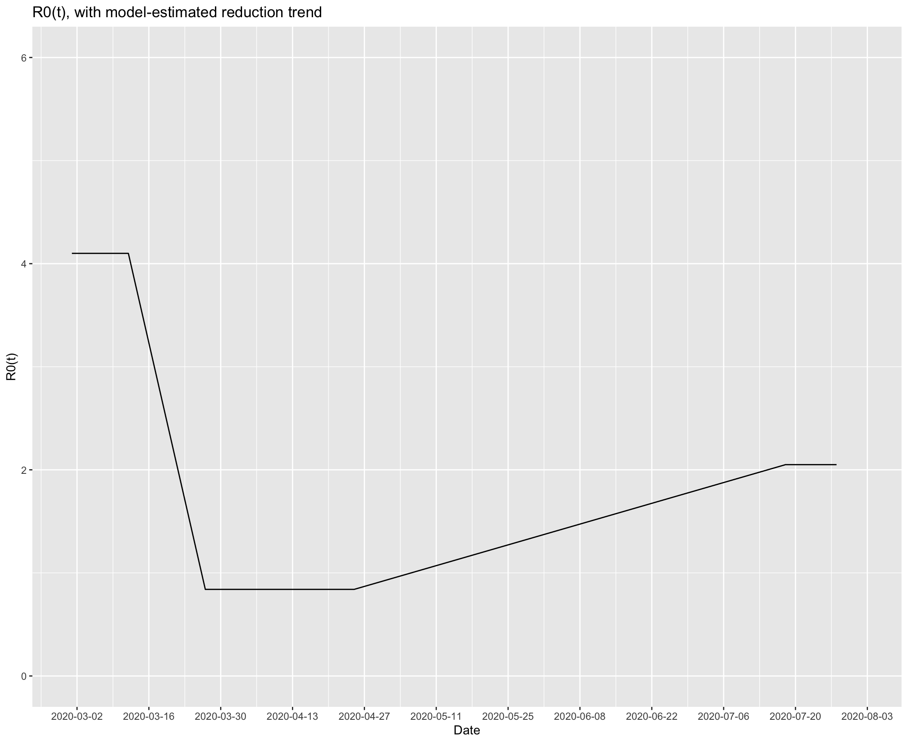
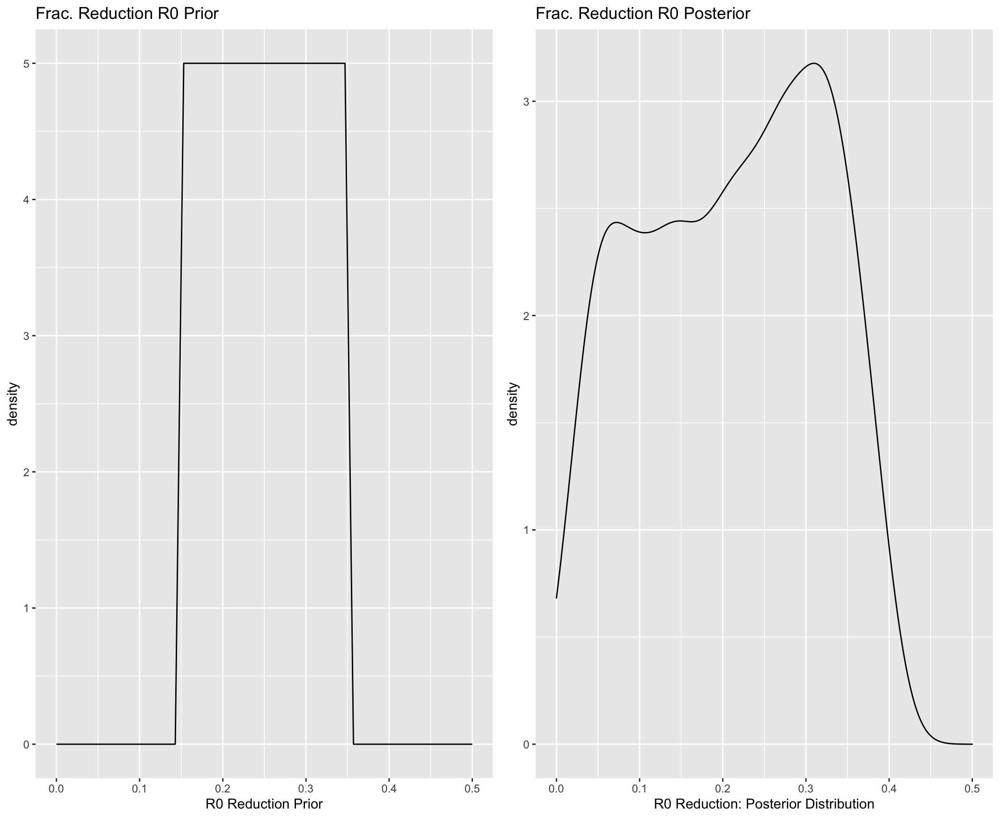

USC Predict COVID19
USC Predict COVID19Methods and Data
Aims
The USC Predict COVID project has developed the SEIR+RISK epidemic model to estimate and gain insight into the impact of COVID-19 in Los Angeles County and on its residents.
The key aims we are addressing are:
Aim 1: Project the peak of the epidemic and its impact on health care capacity
Aim 2: Project the dynamics of the epidemic when social distancing is reduced or returns to pre-pandemic levels
Aim 3: Evaluate the influence of the epidemic on different at-risk groups
Information provided by each aim
Aim 1: Project the peak of the epidemic and its impact on health care capacity
We estimate counts of the numbers of individuals over time, including the peak occurrence, for the following:
| Variable | Description |
|---|---|
| \(I\) | Infected, detected and observed with testing |
| \(Itot\) | Total number of infected cases including both the number detected and observed with testing, and the undetected/untested cases |
| \(H\) | In Hospital |
| \(Q\) | In ICU |
| \(V\) | On ventilator |
| \(D\) | Deaths |
We estimate a number of key epidemic parameters, including:
| Parameter | Description |
|---|---|
| \(R0\) | Basic reproductive number |
| \(Frac_{R0}\) Mar.12-May 12 | Factor reduction in initial \(R0\) Mar.12-May12 |
| \(Frac_{R0}\) May.12-May 25 | Factor reduction in initial \(R0\) May 12-25 |
| \(r\) | Proportion of illnesses that are detected and reported out of all illnesses |
| \(Pr(Hospital|Illness)\) | probability infected (I) requires hospitalization (vs. recovers) |
| \(Pr(ICU|Hospital)\) | probability hospitalized (H) requires ICU (vs. recovers) |
| \(Pr(Death|ICU)\) | probability ICU (Q) patient dies |
| \(Pr(Ventilation|ICU)\) | probability ventilation (V) required given ICU |
Model estimates realting to Aim 1 are found on the Model Projections page.
Aim 2: Project the dynamics of the epidemic when social distancing is reduced or returns to pre-pandemic levels
We provide predictions for the impact on counts and corresponding time periods under various social distancing scenarios in which restrictions are eased. We evaluate the impact of 7 scenarios, each corresponding to a different contact rate. These scenarios can be understood in terms of:
- The Effective \(R0\): The effective R0 this % decrease corresponds to
- The % of original \(R0\): Percent of the original (pre-social-distancing) \(R0\) the effective \(R0\) this scenario represents
- The % increase from current: Percent increase from current (as of 2020-07-22) level of social distancing / contact rate
Model estimates realting to Aim 2 are found on the Scenarios Page.
Aim 3: Evaluate the influence of the epidemic on different at-risk groups
We provide projections of illness severity trajectories in L.A. County as a whole and for race/ethnicity groups, based on prevalence of known COVID-19 risk factors.
We provide estimates of the probability of hospitalization given illness, \(Pr(Hospital | Illness)\), probability of admittance to the intensive care unit (ICU) given being in hospital, \(Pr(ICU | Hospital)\), and probability of death given being in ICU, \(Pr(Death | ICU)\) for each combination of risk factors, or risk profiles. These estimated probabilities are provided on the Risk Table page.
Based on the prevalence of these risk profiles in the general L.A. County population, we provide projections of illness severity trajectories in L.A. County as a whole and for race/ethnicity groups.
These projections are provided on the Home page.
Model Contributions
Why our model is unique
Contributions to each aim:
Aim 1: Projecting the peak of the epidemic and its impact on health care capacity
- We develop an SEIR model that also incorporates healthcare utilization variables: Hospitalization, Ventilation, and Death compartments. This enables us to provide projections for these compartments, which are important for planning. It also enables better specification of our model and more accurate parameter estimation because these counts are more reliable than Illness counts.
- We also include a variable and parameter enabling us to estimate Unobserved Illnesses. This is combined with external information to specify a prior on the true number of undetected cases, coming from seroprevalence studies
- Our epidemic compartmental model uses stochastic differential equations and approximate Bayes calculation techniques for parameter estimation, enabling presentation of the uncertainty in all estimations and predictions.
- This Bayesian approach allows us to influence parameter estimates through prior specification. We utilize diverse, reliable data streams to specify these priors:
- Mobility data to inform the change in contact rates or R0
- Seroprevalence studies to inform the fraction of illnesses that are detected vs. undetected
- Published studies on COVID-19 illness trajectories to inform the probability of severe illness given risk factors, and local prevalence data to inform the rates of individuals in the population with combinations of these risk factors.
Aim 2: Projecting the dynamics of the epidemic when social distancing is reduced or returns to pre-pandemic levels
- We modify parameters at different time points, providing better model specification and estimation for a rapidly developing epidemic and behavioral responses, incorporating evolving trends e.g. in testing.
- Time-varying parameters also enable the specification of interventions for scenario analysis and future planning, e.g. social distancing scenarios.
- Mobility data which we incorporate helps to specify the observed changes in contact rate, which can inform behavioral response to various social distancing scenarios.
Aim 3: Evaluating the influence of the epidemic on different at-risk groups
- The particular contribution of our model over existing models estimating hospital resource demand is that it accounts for combinations of risk factors (age, existing comorbidities and combinations of comorbidities), including area-level differences in prevalence of these risk factors, in determining COVID intensity.
- Using studies reporting the risk of severe COVID-19 outcomes for individual risk factors, we develop a statistical model to estimate the probability of COVID illness trajectories for given combinations of risk factors.
- Accounting for differential risk for specific populations is important both for model projections, helping to factor in local prevalence rates of risk factors in estimating the scale of the epidemic.
- It also enables us to provide projections based on specific at-risk groups, informing the prioritization of specific populations for protection.
- Additionally, the integration in this model between risk factors and illness projections allows for actionable policy analysis not possible if these are independently, for example in determining a portfolio of health factor priorities that would most effectively reduce disease incidence and severity.
Methods
SEIR+Risk epidemic model
In the following we provide an overview of the stochastic differential equation epidemic model developed in this work. We have called this the SEIR+Risk model because we incorporate risk probabilities into the model specification.
Overview
Model compartments
We develop a model of COVID-19 transmission in a single, fully-mixed population. The transmission process we develop reflects transitions known to be important to COVID-19 transmission, and includes Susceptible, Exposed (latent but not yet infectious), Infectious, and Recovered compartments. We also include healthcare utilization variables: Hospitalization, Ventilation, and Death compartments. This enables us to provide projections for these compartments, which are important for planning. It also enables better specification of our model and more accurate parameter estimation because these counts are more reliable than Illness counts. We additionally include a variable and parameter enabling us to estimate the Unobserved Infectious class. This is combined with external information to specify a prior on the true number of undetected cases, coming from seroprevalence studies.
Time-varying factor reduction in \(R0\)
In addition to the compartments, we include time-varying parameters. Currently, we specify a parameter encoding a reduction in contact rate. Changes in contact rate translate directly changes in the basic reproductive number \(R0\) and the infectivitity rate \(\beta\) because all of these quantities are directly proportional. Because \(R0\) is a more commonly discussed quantity, and a parameter estimated by our model, in the following we discuss changes in contact rate in terms of the equivalent changes in \(R0\), i.e. \(Frac_{R0}(t)\). For shorthand we also refer to this parameter as \(\mu\) in the system of equations. This time varying parameter allows us to explicitly model the change in contact rate, or equivalently, change in \(R0\), with time due to different policy interventions / social distancing scenarios. We are able to specify the prior for this parameter using reliable mobility data. This time varying parameter allows us to perform better model estimates, as well as to do scenario analysis and planning for the future.
Stochasticity
The difference between a deterministic model and a stochastic model:
- Deterministic model: For given values of parameters, dynamics across compartments will be fixed.
- Stochastic model: Probability distributions are used model the transfer of individuals between compartments.
Benefits of a stochastic model:
- Reflects the stochasticity inherent in the disease transmission and evolution process
- For parameter estimation: Provides a better framework for parameter estimation, based on observed data
- For projections and scenario analysis: Enables forecasts with confidence bounds that account for variability in parameters and the stochasticity of the disease process.
How stochasticity is included in our model
We develop a stochastic Eulerian discrete-valued epidemic model. In this model, individuals move between compartments with transitions mathematically defined by Poisson, binomial, and multinomial distributions. Each evaluation of the model with the same parameter values and initial conditions will result in an ensemble of epidemic realizations. In addition to the stochasticity of the disease transmission and evolution process, we bring in stochasticity in the parameter estimates. We simulate trajectories across distributions of likely parameter values instead of reducing parameters to a fixed estimate.
Flow diagram

Compartmental model flow diagram
System of Equations
\[ \begin{align*} dS/dt &= -\beta \mu(t)S(I+A)\\ dE/dt &= \beta \mu(t) S(I+A) - \tfrac{1}{d_{EI}}E\\ dA/dt &= \tfrac{1-r}{d_{EI}}E - \tfrac{1}{d_{IR}}A\\ dI/dt &= \tfrac{r}{d_{EI}}E - (\tfrac{\alpha}{d_{IH}}\tfrac{1-\alpha}{d_{IR}})I\\ dH/dt &= \alpha (\tfrac{\alpha}{d_{IH}}\tfrac{1-\alpha}{d_{IR}})I - (\tfrac{\kappa}{d_{HQ}}\tfrac{1-\kappa}{d_{HR}})H \\ dQ/dt &= \kappa (\tfrac{\kappa}{d_{HQ}}\tfrac{1-\kappa}{d_{HR}})H - (\tfrac{\delta}{d_{QD}}\tfrac{1-\delta}{d_{QR}})Q \\ dV/dt &= p_V Q\\ dD/dt &= \delta (\tfrac{\delta}{d_{QD}}\tfrac{1-\delta}{d_{QR}})Q\\ dR/dt &= (1-\alpha) (\tfrac{\alpha}{d_{IH}}\tfrac{1-\alpha}{d_{IR}})I + (1-\kappa) (\tfrac{\kappa}{d_{HQ}}\tfrac{1-\kappa}{d_{HR}})H + (1-\delta)(\tfrac{\delta}{d_{QD}}\tfrac{1-\delta}{d_{QR}})Q + \tfrac{1}{d_{IR}}A \ \end{align*} \]
\[ R0 = \beta \mu(t) ({\frac{r}{\tfrac{\alpha}{d_{IH}}+\tfrac{1-\alpha}{d_{IR}}}+ (1-r){d_{IR}}}) \\ N=S+E+A+I+H+Q+D+R \]
Model Compartments
| Variable | Description |
|---|---|
| \(N\) | Total population size |
| \(S\) | Susceptible population |
| \(E\) | Exposed not yet infectious |
| \(A\) | Infected, unobserved |
| \(I\) | Infected, observed |
| \(H\) | In Hospital |
| \(Q\) | In ICU |
| \(V\) | On ventilator |
| \(D\) | Dead |
| \(R\) | Recovered/removed |
Model Parameters
Fixed
- Fixed model parameters provide the transition times between compartments.
- Values were taken from the literature from various sources, detailed here.
| Parameter | Description | Value |
|---|---|---|
| \(d_{EI}\) | days between exposure and infectivity (incubation period) | 5 days |
| \(d_{IH}\) | days between symptom onset and hospitalization (if required) | 10 days |
| \(d_{IR}\) | days between symptom onset and recovery (if not hospitalized) | 7 days |
| \(d_{HQ}\) | days between hospitalization and ICU (if required) | 1 day |
| \(d_{QR}\) | days between hospitalization and recovery (if ICU not required) | 12 days |
| \(d_{QD}\) | days between ICU and fatality | 8 days |
| \(d_{QR}\) | days between ICU and recovery | 7 days |
Estimated
| Parameter | In System of Equations | Description |
|---|---|---|
| \(R0\) | \(R0\) | Basic reproductive number |
| \(\beta\)* | \(\beta\)* | Infectivity rate |
| \(t(0)\) | - | Start time of the epidemic |
| \(Frac_{R0}\) | \(\mu(t)\) | Time-varying reduction in initial \(R0\) |
| \(r\) | \(r\) | Proportion of illnesses that are detected and reported out of all illnesses |
| \(Pr(Hospital|Illness)\) | \(\alpha\) | probability infected (I) requires hospitalization (vs. recovers) |
| \(Pr(ICU|Hospital)\) | \(\kappa\) | probability hospitalized (H) requires ICU (vs. recovers) |
| \(Pr(Death|ICU)\) | \(\delta\) | probability ICU (Q) patient dies |
| \(Pr(Ventilation|ICU)\) | \(p_V\) | probability ventilation (V) required given ICU |
- \(\beta\) is analytically derived from our model with estimated value for \(R0\).
The section Estimated Parameters provides details on parameter prior and posterior distributions.
Parameter Estimation Procedure
We use Approximate Bayesian Computation (ABC) for parameter estimation.
Benefits of using ABC include:
- Allows us to incorporate the uncertainty in all the parameters in fitting the model to data and estimating parameters
- Allows us to include all prior information and/or assumptions about the distribution (the range of values) for each parameter
- Allows us to prioritize data input that is more reliable in fitting the model to data (e.g., not including more unreliable early illness count data)
Overview
In brief, ABC involves specifyinig prior distributions for parameters that function as the modelers’ assumed likelihood of an initial “guess” of the initial parameter values. The model is simulated with a parameter “guess” and the resulting outbreak is compared to the observed data to determine how similar these appear. This procedure is repeated to identify a range of parameter values for which the fit of the simulations to the observed outbreak data is adequate. These resulting parameter values used for the simulations that are in agreement with data then serve as ‘parameter estimates.’
Using ABC on multiple parameters simultaneously produces joint posterior estimates over all parameters rather than the marginal posterior of a single parameter. In forward simulations of our model, we simulate trajectories with parameter values coming from this joint posterior distribution, rather than a single value of a parameter.
Variable observations used for parameter estimation
We use current numbers of Infected (observed), Hospitalized, ICU, Ventilated, and Deaths in the parameter estimation procedure. Incorporating data beyond observed Infected cases allows for better fitting, because this data is more reliable; for example, deaths are likely more accurately reported than cases in settings with limited testing capacity where tests are usually prioritized for the more severely ill patients. We further improve the reliability of the data used for estimation by weighting the parameter estimation procedure such that early count data in all compartments is not included; what this means is that we only use to variable counts beginning around mid-March 2020 (and at later dates for more delayed compartments e.g. Death counts).
Estimated Parameters
Model Estimated Parameters: Prior Specification and Posterior Estimates
Below we provide information on prior specification and resulting posterior estimation of each parameter. Because our model is stochastic and we are using Bayesian techniques for parameter estimation, each posterior parameter estimate is represented by a distribution of likely values.
Summary of key estimated parameters
Summary of key statistics of each estimated parameter: the mean and the standard deviation
| Parameter | Description | Mean | Std.Dev. |
|---|---|---|---|
| \(R0\) | Basic reproductive number | 4.22 | 0.15 |
| \(Frac_{R0}\) | Time-varying reduction in initial \(R0\) | 0.21 | 0.11 |
| \(r\) | Proportion of illnesses that are detected and reported out of all illnesses | 0.035 | 0.007 |
| \(Pr(HospitalIllness)\) | probability infected (I) requires hospitalization (vs. recovers) | 0.116 | 0.059 |
| \(Pr(ICUHospital)\) | probability hospitalized (H) requires ICU (vs. recovers) | 0.713 | 0.164 |
| \(Pr(DeathICU)\) | probability ICU (Q) patient dies | 0.593 | 0.058 |
| \(Pr(VentilationICU)\) | probability ventilation (V) required given ICU | 0.851 | 0.005 |
Illness severity probabilities
Priors for illness severity probabilities, \(Pr(Hospital | Illness)\), \(Pr(ICU | Hospital)\), \(Pr(Death | ICU)\): Risk modeling and previous COVID-19 studies
We use previous studies to narrow the specification of the probability of hospitalization given illness, admittance to the intensive care unit (ICU) given being in hospital, ventilation given being in ICU, and death given being in ICU by incorporating risk factors, including age, sex, smoking and other comorbidities. The prevalence of these risk factors in Los Angeles County is also included.
The comorbidities included in the “any comorbidity” category are: hypertension, diabetes, cardiovascular disease, cerebrovascular disease / stroke, cancer, COPD, and athsma. It is important to note that each of these conditions has its own risk of disease outcome; future models will disaggregate risk estimates by specific risk conditions when sufficient data becomes available to produce these estimations.
The value of accounting for combinations of risk factors and breaking down risk estimates to specific combinations of risk factors is that this provides more specific information on risk for specific individuals. Marginal probabilities for single risk factors represent an average across all combinations of conditions; for example, the probability of hospitalization given illness for age 65+ averages over the risk for the population 65+ that has multiple comorbidities as well as those that do not, whereas the risk for an individual 65+ with no comorbidities will be significantly lower than that for someone with multiple comorbidities and a history of smoking.
Details: Estimating the conditional probability of COVID illness severity given combinations of risk factors
Using studies reporting the marginal risk of severe COVID-19 outcomes given individual risk factors, we develop a statistical model to estimate the probability of COVID illness trajectories for individuals with combinations of risk factors. Specifically, we estimate the probability that individuals having (or not) combinations of risk factors are admitted to hospital given having acquired (observed/detected) illness \(Pr(Hospital | Illness)\), are admitted to the ICU given admittance to hospitalized \(Pr(ICU | Hospital)\), and that die given being admitted to the ICU \(Pr(Death | ICU)\).
Our methodology for joint risk factor estimation relies on a model, called JAM, developed for use in genome-wide analyses to identify the conditional relative risk (RR) of phenotypic occurrence given joint combinations of genes from two pieces of information: (i) the marginal RR between single genes and phenotype and (ii) the correlation structure between the genes. We apply the JAM model to estimate the conditional RR of COVID-19 illness severity (hospitalization, ICU, and death) given joint combinations of risk factors. For information informing (i) we obtain the marginal RR between individual risk factors and COVID-19 illness severity from published COVID-19 studies (sources below, peer-reviewed where available). For (ii), we obtain the correlation structure between the risk factors using data from The National Health and Nutrition Examination Survey (NHANES). NHANES is a survey research program conducted by the National Center for Health Statistics (NCHS) to assess the health and nutritional status of adults and children in the United States, and to track changes over time. We use the NHANES cohort of 2017-2018.
After obtaining the conditional RR of COVID-19 illness severity (hospitalization, ICU, and death) given joint combinations of risk factors, we convert these risks into the probabilities \(Pr(Hospital | Illness, Profile_i)\), \(Pr(ICU | Hospital,Profile_i)\), and \(Pr(Death | ICU,Profile_i)\). The analysis we present here has taken the combinations of risk factors and grouped these into 5 key risk groups according to similar within-group levels of the probabilities \(Pr(Hospital | Illness, Profile_i)\), \(Pr(ICU | Hospital, Profile_i)\), and \(Pr(Death | ICU, Profile_i)\). To produce an estimate of the overall \(Pr(Hospital | Illness)\) across all risk groups for L.A. County and subpopulations, we take the weighted average of the probability for each risk profile and the prevalence of the risk profile pover all illnesses, i.e.
\[ \begin{align*} Pr(Hospital | Illness) = \sum_i Pr(Profile_i | Illness)Pr(Hospital|Profile_i,Illness) \end{align*} \] We assume that the prevalence of the risk profile in the ill population, \(Pr(Profile_i|Illness)\), is equal to the prevalence of the profile in the general population of L.A. County, i.e. \(Pr(Profile_i)\). We again borrow the correlation structure between risk factors derived from the NHANES cohort to estimate the population prevalence \(Pr(Profile_i)\) from available data on the prevalence of individual risk factors.
The same approach is applied to estimate \(Pr(ICU | Hospital)\) and \(Pr(Death|ICU)\): \[ \begin{align*} Pr(ICU | Hosptial) = \sum_i Pr(Profile_i | Hospital)Pr(ICU|Profile_i,Hospital)\\ Pr(Death | ICU) = \sum_i Pr(Profile_i | ICU)Pr(Death|Profile_i,ICU) \end{align*} \]
Resulting estimated priors
The resulting prior estimates for \(Pr(Hospital | Profile_i,Illness)\), \(Pr(ICU | Profile_i,Hospital)\), \(Pr(Death | Profile_i,ICU)\) given the combinations of risk factors summarized in each risk profile are provided in the Risk Table.
\(R0\)
- Mean = 4.217
- Standard deviation = 0.145
Prior for \(R0\), Reproductive number: Previous COVID-19 studies
\(R0\) prior estimate is based on values for \(R0\) estimated from other published studies on COVID-19.
Prior and Posterior Plots 
\(r\)
- Mean = 0.035
- Standard deviation = 0.007
Prior distribution for \(r\): Seroprevalence studies
A seroprevalence study conducted on the Los Angeles on April 10-11, 2020, by Neeraj Sood and LADPH, found the prevalence of antibodies in 3.6% (1.7,5.2) of the sampled population. We use this information to inform two pieces of information: (i) the prior distribution for \(r\), the fraction of observed illnesses over all illnesses, and (ii) an observed data point for the number of counts in the Recovered compartment. We make the following assumptions:
- The seroprevalence study retuns an estimated % of the population of L.A. that has antibodies for COVID-19 by the study date. We assume this is equal to the proportion of total recovered individuals as of a week prior to the study date, April 4, 2020, since it takes a week for antibodies to develop.
- We assume the fraction of observed illnesses \(r\) is approximately equal to the fraction of recovered cases as:
\[ \begin{align*} \mathbf{r} = \frac{cum. obs. I(t = t')}{cum. tot. I(t=t')}\\ \approx \frac{cum. obs. R(t=t')}{cum.tot.R(t=t')}\\ \end{align*} \] - The seroprevalence study informs the denominator, the total recovered cases at \(t'\) = April 4. - The numerator, the “observed” recovered cases at time \(t'\), is assumed to be approximately equal to the observed illnesses at time \(t'-\) [1,3] weeks, which is the assumed period from infectiousness to recovery. - We specify the minimum and maximum values for the prior for \(r\) \(Pr(r)\) using the equation above with the range of the % of the population with antibodies on of April 4, and the number of observed illnesses 1-3 weeks prior to that. - In addition to using the seroprevalence study to inform the prior distribution on \(r\), we use it to inform the
Data point on number in Recovered compartment
We use the results of the seroprevalence study to inform a fixed data point representing the number of counts in the Recovered compartment on April 4. We use this data point together with the approximated timing of the first recovered case (1-3 weeks after the start date of the outbreak) to interpolate an exponential distribution in the time series of counts in the Recovered compartment. This is then used as an observed data input alongside the other observed compartment variables (illnesses, hospitalizations, deaths, etc.) in the parameter estimation procedure.
These estimates will be greatly improved by time series of COVID-19 seroprevalence, i.e. as results of future seroprevalence studies become available.
Prior and Posterior Plots

\(Frac_{R0}\)
Prior on \(Frac_{R0}\), the reduction in the initial R0 due to social distancing: Mobility data
- Mean = 0.21
Standard deviation = 0.106
We use mobility data to narrow the specification of the reduction in the average number of new infections due to an infected person (R0) in a completely susceptible population under recent social distancing restrictions.
Effectively, reductions in mobility correspond to a proportional reduction in R0.
Reduction in mobility observed in LA County

encounter reduction
Sources:
- Unacast COVID-19 Social Distancing Scoreboard
Our modeled reduction in R0 timeline:

Prior and Posterior Plots

Joint posterior densities of interest

Projections by Risk Group
We extend the risk factor analysis to estimate the proportion of each risk or race/ethnicity group that will make up the cohorts of COVID patients admitted to hospital, admitted to ICU, or that die in L.A. County and across the SPAs.
Specifically, we estimate the proportion of each risk or race/ethnicity group that will make up the cohorts of COVID patients admitted to hospital (\(Pr(Group_i|Hospital\))), admitted to ICU (\(Pr(Group_i|ICU\))), or death (\(Pr(Group_i|Death\))) in L.A. County population and each SPA, as the relative share of each group and disease status:
\[ \begin{align*} Pr(Group_i|Hospital) = \frac{Pr(Group_i|Illness)Pr(Hospital|Group_i,Illness)}{Pr(Hospital|Illness)}\\ Pr(Group_i|ICU) = \frac{Pr(Group_i|Hospital)Pr(ICU|Group_i,Hospital)}{Pr(ICU|Hospital)}\\ Pr(Group_i|Death) = \frac{Pr(Group_i|ICU)Pr(Death|Group_i,ICU)}{Pr(Death|ICU)}\\ \end{align*} \] We the multiply the group prevalences above by the trajectory median values for number in hospital, ICU, and death from the epidemic model to arrive at the trajectory breakdowns presented.
Data
Illness case data
We use current numbers of infected (observed), hospitalized, ICU, ventilated, and deaths, as well as the capacity (total number of resouces available) at hospitals, ICUs, and ventilators in L.A. County from the Los Angeles County Department of Public Health, updated daily by Faith Washburn (shared privately).
The data used in this version of the report includes counts up through 2020-07-21
Data processing: Nursing home counts removed from LA County daily counts
We are fitting our model to the general COVID-19 illness trends in L.A. County. At present, the burden of mortality of COVID-19 is led by cases from residents of Skilled Nursing Facilities (SNFs), more commonly referred to as Nursing Homes, a category of licensed healthcare residences for seniors who require a higher level of medical care than can be provided in an assisted living facility. As of 2020-07-22, the percentage of all deaths in L.A. County that coming from SNFs is 47.2%.
Due to the differences in both (i) the prevalence of particularly high-risk profiles in SNFs (notably, the average age of nursing home residents in California is 87) and (ii) the conditions of these close-quartered facilities for which social distancing and reductions in contact rate are less tenable, the dynamics of the outbreak and associated illness severity probabilities will be distinct in SNFs from the general community. Therefore, to fit a model for the general L.A. community we have removed the numbers of illnesses, hospitalizations, ventilations, and deaths coming from SNFs from the overall L.A. counts before the parameter estimation procedure. In other words, we fit our general population model to the data with the SNF cases removed, as illustrated below. Because case counts from SNFs are not available prior to April 21, 2020, we have estimated the epidemic trajectory in SNFs leading up to this date.

Data processing: Removing nursing home counts in illnesses and deaths by race
To remove SNF cases by race for use in the relative risk of death rate comparison plots, we have taken two steps:
- Determine the total number of counts to remove, as described above;
- Distribute this number of removed counts by race according to statistics on the race distribution at care homes in California, as published by the Public Policy Institute of California.
Risk factor data
COVID-19 Illness Trajectory Relative Risks
Studies on COVID-19 clinical presentation and trajectories to inform the probability of hospitalization, ICU, and ventilation based on single risk factors:
- Guan, Wei-jie, et al. “Clinical characteristics of coronavirus disease 2019 in China.” New England Journal of Medicine (2020).
- Petrilli, Christopher M., et al. “Factors associated with hospitalization and critical illness among 4,103 patients with COVID-19 disease in New York City.” medRxiv (2020).
- Summary table of the modified Relative Risks (RR) coming from these studies, which are used by our statistical model estimates
Correlation structure between risk factors
We obtain the correlation structure between the risk factors using data from The National Health and Nutrition Examination Survey (NHANES). NHANES is a survey research program conducted by the National Center for Health Statistics (NCHS) to assess the health and nutritional status of adults and children in the United States, and to track changes over time. We use the NHANES cohort of 2017-2018.
L.A. County Risk Factor Prevalences
Mobility data
We use mobility data to narrow the specification of the reduction in the average number of new infections due to an infected person (R0) in a completely susceptible population under recent social distancing restrictions.
Sources:
Limitations and Next Steps
Predictive epidemic modeling can help to evaluate the public health strategies for limiting the spread of COVID-19. However, the findings and projections from the model must be interpreted relative to the input data and modeling decisions or assumptions. Below we list some of the key assumptions and limitations of this model. Some of these will be addressed in future work.
Epidemic Predictions
- Dynamics: We develop a simplistic modeling dynamics that assumes homogeneous mixing and a single population, whereas there are many different subpopulations with different contact structures and types. As such, this model does not account for differences in contact patterns within and across key groups, such as workplaces, schools, and communities; or of group-specific social distancing scenarios. Future work should stratify contact rates to specific risk groups. In addition, high resolution models are available and are being used to simulate at a micro level the different policies and interventions that can be implemented; this should be the direction of future work to predict the effect the portfolio of options for reopening society.
- This model does not account for the role of interventions beyond social distancing, such as contact tracing and surveillance testing, which are critical to identifying and limiting the spread of the virus.
- This model does not account for unanticipated behavioral responses to the effects of interventions or mitigation strategies
- The accuracy of the parameter estimation depends on the accuracy of the prior specifications and any fixed parameters employed, including the incubation and recovery period. As new information about the epidemiological characteristics of COVID-19 continues to arise, model estimation will need to be continuously updated. Incorporating the latest information into our models will be key to maintaining its relevance for policy and analysis.
Risk Factor Predictions
- Probability of severe illness: Our risk model provides estimates of COVID-19 illness severity probabilities due to risk factors for COVID alone (age, comorbidities, obesity, smoking). This can be seen as a “baseline” risk model, whereas a multitude of exogenous factors may impact what we observe on the epidemic, including:
- Differences in dynamics among subpopulations: Different dynamics at different scales due to different types of contact patterns and structures, and abilities to adhere social distancing guidance/guidelines, which translate to different rates of infection and subsequent stages of illness.
- Initial conditions: Randomness (and structure) in initial seeding events
- Access to care: Disparities exist in access to health care and which individuals are being treated in health care facilities, which also impacts the numbers showing up in health care related statistics.
- Testing: Disparities in who is getting tested and at what stage of disease
- Additionally, these probabilities are only as accurate as the data used to produce these estimates, coming from early published clinical studies of COVID-19. These input data are likely to differ across study populations, and can also vary based on study definitions.